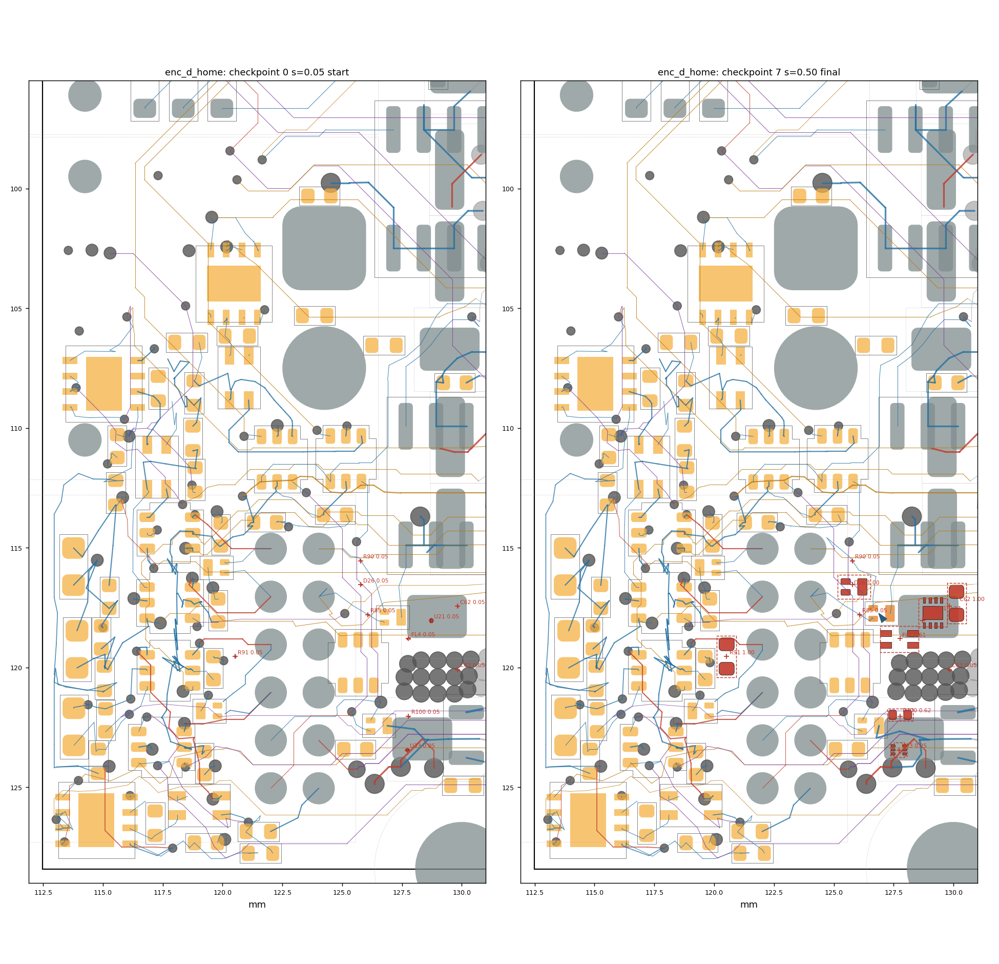
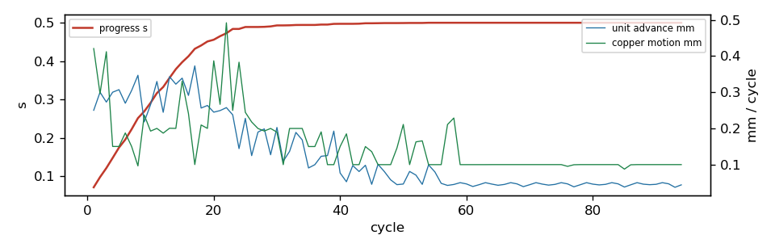

settle run: enc_d_home
94 cycles in 36.2 s, progress s = 0.5002; 3/10 ghosts born; 1 parts moved; 1/51 reroutes verified in 0 rounds. Gate: 5/8 checkpoints pass (baseline 7 violations); length caps hit: 0; check_sync: True.
Region [112.4, 96.0, 130.5, 128.5]; rules clearance 0.1 mm, hole 0.254, edge 0.3, guard 0.015.
49 movable parts, 1018 dynamic segments, 1125 nodes, 10 ghosts.
Orange pads = movable parts (dark orange = moved); grey = fixed; red = ghosts at their current scale; blue arrows = part displacement.
Copper by layer: F red, B blue, In1 green, In2 purple, In3 brown, In4 teal; static copper grey.


Gate per checkpoint
| step | s | tag | unconnected | new_violations | static_missing | fixed_moved | ok | new_desc |
|---|
| 0 | 0.05 | start | 126 | 0 | 0 | [] | True | [] |
| 1 | 0.121 | | 126 | 0 | 0 | [] | True | [] |
| 2 | 0.222 | | 126 | 0 | 0 | [] | True | [] |
| 3 | 0.317 | | 126 | 0 | 0 | [] | True | [] |
| 4 | 0.413 | | 126 | 0 | 0 | [] | True | [] |
| 5 | 0.494 | reroute | 129 | 1 | 0 | [] | False | ['via_dangling: Via is not connected or connected on only one layer'] |
| 6 | 0.5 | | 129 | 1 | 0 | [] | False | ['via_dangling: Via is not connected or connected on only one layer'] |
| 7 | 0.5 | final | 129 | 1 | 0 | [] | False | ['via_dangling: Via is not connected or connected on only one layer'] |
Ghosts
| ref | site | scale | drift_x | drift_y | born |
|---|
| D26 | (125.77, 116.54) | 1.0 | -0.042 | 0.093 | yes |
| FL4 | (127.77, 118.79) | 0.6138 | -0.032 | 0.025 | no |
| R90 | (125.77, 115.54) | 0.05 | 0.0 | 0.0 | no |
| R91 | (120.52, 119.54) | 1.0 | 0.0 | 0.0 | yes |
| R100 | (127.77, 122.04) | 0.616 | 0.001 | -0.067 | no |
| U21 | (128.72, 118.04) | 0.3707 | 0.42 | -0.331 | no |
| R85 | (126.07, 117.79) | 0.05 | 0.0 | 0.0 | no |
| U33 | (127.72, 123.44) | 0.2514 | 0.0 | 0.0 | no |
| C62 | (129.82, 117.44) | 1.0 | 0.31 | -0.123 | yes |
| C63 | (129.82, 120.09) | 0.05 | 0.0 | 0.0 | no |
Parts moved
| ref | dx | dy | mm | group |
|---|
| D27 | -0.119 | -0.16 | 0.199 | |
Net length growth (copper inside the region)
| net | region_mm | grown_mm | growth_pct | allow_mm | cap_mm | at_cap |
|---|
| /MOT_TH | 15.34 | 1.266 | 8.2 | 3.069 | 7.672 | |
| GND | 87.49 | 1.739 | 2.0 | None | None | |
| /ENC_B_P | 7.04 | 0.036 | 0.5 | 0.704 | 2.0 | |
| /ENC_C_P | 16.33 | -0.029 | -0.2 | 1.633 | 2.449 | |
| /I2C_SCL | 15.56 | -0.057 | -0.4 | 3.112 | 7.781 | |
Stalled units and their blockers
| unit | hard_walled | blocker | net | ref | margin | floor | pos |
|---|
| GHOST:R90 | | dyn_seg | /MOT_TH | | -0.0874 | 0.015 | [125.196, 114.995] |
| GHOST:R90 | | dyn_seg | /MOT_TH | | -0.0918 | 0.015 | [125.196, 114.995] |
| GHOST:R90 | | dyn_seg | /MOT_TH | | -0.0945 | 0.015 | [125.196, 114.995] |
| GHOST:R90 | | dyn_seg | /MOT_TH | | -0.0947 | 0.015 | [125.196, 114.995] |
| GHOST:R85 | | dyn_seg | /I2C_SCL | | -0.2 | 0.015 | [126.24, 117.893] |
| GHOST:R85 | | dyn_seg | /I2C_SCL | | -0.2 | 0.015 | [126.24, 117.893] |
| GHOST:C63 | | dyn_via | /D | | -0.2834 | 0.015 | [129.7, 120.4] |
| GHOST:C63 | | dyn_via | /D | | -0.2834 | 0.015 | [129.7, 120.4] |
| GHOST:C63 | | dyn_via | /D | | -0.2822 | 0.015 | [129.7, 120.4] |
| GHOST:C63 | | dyn_via | /D | | -0.2789 | 0.015 | [129.7, 120.4] |
| D25 | | pad | GND | D21.2 | -0.0688 | -0.02 | [128.35, 122.985] |
| GHOST:R100 | | pad | GND | D25.3 | 0.0059 | 0.015 | [126.89, 122.436] |
| GHOST:R100 | | pad | GND | D25.3 | 0.0051 | 0.015 | [126.89, 122.436] |
| GHOST:R100 | | pad | GND | D25.3 | -0.0011 | 0.015 | [126.89, 122.436] |
| GHOST:R100 | | pad | GND | D25.3 | -0.0127 | 0.015 | [126.89, 122.436] |
| GHOST:U33 | | dyn_via | GND | | 0.0067 | 0.015 | [127.448, 124.175] |
| GHOST:U33 | | dyn_via | GND | | -0.0012 | 0.015 | [127.448, 124.175] |
| GHOST:U33 | | dyn_via | GND | | -0.0051 | 0.015 | [127.448, 124.175] |
| GHOST:U33 | | dyn_via | GND | | -0.0098 | 0.015 | [127.448, 124.175] |
| U31 | yes | pad | /ENC_D_P | J12.6 | -0.0035 | 0.015 | [124.02, 121.045] |
| U31 | yes | pad | /ENC_D_P | J12.6 | -0.0279 | 0.015 | [124.02, 121.045] |
| U31 | yes | pad | /ENC_D_P | J12.6 | -0.03 | 0.015 | [124.02, 121.045] |
| U31 | yes | pad | /ENC_D_P | J12.6 | 0.0007 | 0.015 | [124.02, 121.045] |
| GHOST:U21 | | ghost_pad | /ENC_D_TRX_B | GHOST:FL4.1 | -0.0096 | 0.015 | [128.306, 118.575] |
| GHOST:U21 | | ghost_pad | /ENC_D_TRX_B | GHOST:FL4.1 | -0.0096 | 0.015 | [128.306, 118.575] |
| GHOST:U21 | | ghost_pad | /ENC_D_TRX_B | GHOST:FL4.1 | -0.0096 | 0.015 | [128.306, 118.575] |
| GHOST:U21 | | ghost_pad | /ENC_D_TRX_B | GHOST:FL4.1 | -0.0096 | 0.015 | [128.306, 118.575] |
| GHOST:FL4 | | ghost_pad | +3V3 | GHOST:U21.8 | -0.0173 | 0.015 | [128.778, 118.237] |
| GHOST:FL4 | | ghost_pad | +3V3 | GHOST:U21.8 | -0.0173 | 0.015 | [128.778, 118.237] |
| GHOST:FL4 | | ghost_pad | +3V3 | GHOST:U21.8 | -0.0173 | 0.015 | [128.778, 118.237] |
| GHOST:FL4 | | ghost_pad | +3V3 | GHOST:U21.8 | -0.0173 | 0.015 | [128.778, 118.237] |
Absorbed pressure (where demand died)
| mover | blocker | what | hits |
|---|
| U31 | pad | J12.6 [/ENC_D_P] | 1008 |
| U31 | pad | J12.8 [/ENC_D_N] | 720 |
| node4 | pad | D21.2 [GND] | 146 |
| node65 | static_via | /D | 94 |
| D25 | pad | D21.2 [GND] | 85 |
Config
{
"name": "enc_d_home",
"board": "/home/sequoia/pcb/rp2350-motor-controller-lean-jiggle/hardware/tools/settle/configs/data/boards/enc_d_base.kicad_pcb",
"region": [
112.4,
96.0,
130.5,
128.5
],
"rules": {
"guard": 0.015
},
"locked": {
"sides": [
"F"
],
"refs": [
"J1",
"J2",
"J12",
"H3",
"H4",
"U5",
"U9",
"U10"
],
"nets": [
"^/USB_D",
"^/CAN0_"
],
"rects": [
[
130.5,
81.9,
149.6,
128.6
]
]
},
"mobility": {
"default": 1.0
},
"groups": {},
"drive": {
"shove": [],
"inflate": [
{
"ref": "D26",
"at": "search",
"radius": 4.0
},
{
"ref": "FL4",
"at": "search",
"radius": 4.0
},
{
"ref": "R90",
"at": "search",
"radius": 4.0
},
{
"ref": "R91",
"at": "search",
"radius": 4.0
},
{
"ref": "R100",
"at": "search",
"radius": 4.0
},
{
"ref": "U21",
"at": {
"near": "FL4",
"offset": [
3.2,
-2.5
],
"search": 3.0
}
},
{
"ref": "R85",
"at": {
"near": "U21",
"offset": [
-2.4,
0.0
],
"search": 2.0
}
},
{
"ref": "U33",
"at": {
"near": "U21",
"offset": [
0.0,
3.4
],
"search": 2.5
}
},
{
"ref": "C62",
"at": {
"near": "U21",
"offset": [
2.6,
-0.6
],
"search": 2.0
}
},
{
"ref": "C63",
"at": {
"near": "U21",
"offset": [
2.6,
0.8
],
"search": 2.0
}
}
]
},
"step": 0.05,
"snapshots": 10,
"cycles": 600,
"data": "/home/sequoia/pcb/rp2350-motor-controller-lean-jiggle/hardware/tools/settle/configs/data/enc_d_home"
}
Elastic table
{
"default": {
"k": 0.5,
"allow": 0.2,
"cap": 0.5,
"allow_mm": 0.5,
"cap_mm": 2.0
},
"classes": {
"VMOT": {
"k": 0.2,
"allow": 0.3,
"cap": 1.0,
"allow_mm": 1.0,
"cap_mm": 6.0
},
"power": {
"k": 0.2,
"allow": 0.3,
"cap": 1.0,
"allow_mm": 1.0,
"cap_mm": 6.0
},
"usb_5A": {
"k": 0.2,
"allow": 0.3,
"cap": 1.0,
"allow_mm": 1.0,
"cap_mm": 6.0
},
"low_power": {
"k": 0.2,
"allow": 0.3,
"cap": 1.0,
"allow_mm": 1.0,
"cap_mm": 6.0
}
},
"nets": {
"^GND": {
"k": 0.0,
"allow": 1000000000.0,
"cap": 1000000000.0
},
"^(VMOT|Vdrive|VBUS|\\+3V3|\\+1V1|\\+5V_ISO|/V_ENC|/V_SW)$": {
"k": 0.2,
"allow": 0.3,
"cap": 1.0,
"allow_mm": 1.0,
"cap_mm": 6.0
},
"^Net-\\(U(1|6|7|12)-(HO|LO|VB)\\)$": {
"k": 4.0,
"allow": 0.0,
"cap": 0.05,
"allow_mm": 0.0,
"cap_mm": 0.3
},
"^/2[ABCD]G[HL]$": {
"k": 4.0,
"allow": 0.0,
"cap": 0.05,
"allow_mm": 0.0,
"cap_mm": 0.3
},
"^Net-\\(Q[1-4]-[BE]\\)$": {
"k": 4.0,
"allow": 0.0,
"cap": 0.05,
"allow_mm": 0.0,
"cap_mm": 0.3
},
"^Net-\\((R(24|59|62|67|70)|D\\d+)-": {
"k": 2.0,
"allow": 0.05,
"cap": 0.15,
"allow_mm": 0.2,
"cap_mm": 0.8
},
"^/USB_D": {
"k": 4.0,
"allow": 0.0,
"cap": 0.02,
"allow_mm": 0.0,
"cap_mm": 0.1
},
"^/CAN0_": {
"k": 4.0,
"allow": 0.0,
"cap": 0.02,
"allow_mm": 0.0,
"cap_mm": 0.1
},
"^/ENC_[A-D]_(P|N)(_SW)?$": {
"k": 1.0,
"allow": 0.1,
"cap": 0.15,
"allow_mm": 0.5,
"cap_mm": 2.0
},
"^/ENC_[A-D]_TRX_": {
"k": 1.0,
"allow": 0.1,
"cap": 0.2,
"allow_mm": 0.5,
"cap_mm": 2.0
},
"^[ABCD]_PWM_": {
"k": 1.0,
"allow": 0.1,
"cap": 0.25,
"allow_mm": 0.5,
"cap_mm": 3.0
},
"SENSE": {
"k": 1.0,
"allow": 0.1,
"cap": 0.2,
"allow_mm": 0.5,
"cap_mm": 2.0
}
}
}
Log tail
1751 nodes, 1644 sub-segments, 49 movable parts (43 with bound copper), 97 fixed nodes
grandfathered 280 shipped at/below-guard pairs (9 below model rule), 2227 same-net contacts held as attachments
margin census over rule (20um bins, <0 first): -20:4 +0:526 +20:417 +40:504 +60:526 +80:468 +100:375 +120:286 +140:468 +160:319 +180:77500
checkpoint 1: s=0.050 start
cycle 1: s=0.071 ghosts=0/10 blocked=0 adv=0.250mm copper=0.421mm [1s]
checkpoint 2: s=0.121
cycle 5: s=0.175 ghosts=0/10 blocked=0 adv=0.307mm copper=0.150mm [1s]
checkpoint 3: s=0.222
cycle 10: s=0.291 ghosts=0/10 blocked=1 adv=0.266mm copper=0.193mm [2s]
checkpoint 4: s=0.317
cycle 15: s=0.397 ghosts=0/10 blocked=2 adv=0.339mm copper=0.330mm [3s]
checkpoint 5: s=0.413
cycle 20: s=0.456 ghosts=1/10 blocked=1 adv=0.245mm copper=0.387mm [4s]
ghost R90 idle 20 cycles at scale 0.050: local reroute of 2 clamping chains
reroute round 1.1: 0/2 chains rerouted (2 candidates)
ghost R85 idle 20 cycles at scale 0.050: local reroute of 1 clamping chains
reroute round 1.2: 0/1 chains rerouted (1 candidates)
cycle 25: s=0.489 ghosts=3/10 blocked=2 adv=0.228mm copper=0.244mm [7s]
cycle 30: s=0.493 ghosts=3/10 blocked=2 adv=0.203mm copper=0.190mm [8s]
ghost R90 idle 20 cycles at scale 0.050: local reroute of 2 clamping chains
reroute round 1.3: 0/2 chains rerouted (2 candidates)
ghost R85 idle 20 cycles at scale 0.050: local reroute of 1 clamping chains
reroute round 1.4: 0/1 chains rerouted (1 candidates)
ghost U33 idle 20 cycles at scale 0.251: local reroute of 4 clamping chains
reroute round 1.5: 1/4 chains rerouted (4 candidates)
checkpoint 6: s=0.494 reroute
cycle 35: s=0.494 ghosts=3/10 blocked=2 adv=0.091mm copper=0.150mm [11s]
cycle 40: s=0.497 ghosts=3/10 blocked=2 adv=0.077mm copper=0.150mm [12s]
ghost R90 idle 20 cycles at scale 0.050: local reroute of 2 clamping chains
reroute round 1.6: 0/2 chains rerouted (2 candidates)
ghost R85 idle 20 cycles at scale 0.050: local reroute of 1 clamping chains
reroute round 1.7: 0/1 chains rerouted (1 candidates)
ghost U33 idle 20 cycles at scale 0.251: local reroute of 4 clamping chains
reroute round 1.8: 0/4 chains rerouted (4 candidates)
cycle 45: s=0.499 ghosts=3/10 blocked=2 adv=0.045mm copper=0.136mm [15s]
cycle 50: s=0.499 ghosts=3/10 blocked=2 adv=0.046mm copper=0.211mm [16s]
ghost R90 idle 20 cycles at scale 0.050: local reroute of 2 clamping chains
reroute round 1.9: 0/2 chains rerouted (2 candidates)
ghost R85 idle 20 cycles at scale 0.050: local reroute of 1 clamping chains
reroute round 1.10: 0/1 chains rerouted (1 candidates)
checkpoint 7: s=0.500
ghost U33 idle 20 cycles at scale 0.251: local reroute of 3 clamping chains
reroute round 1.11: 0/2 chains rerouted (2 candidates)
cycle 55: s=0.500 ghosts=3/10 blocked=2 adv=0.080mm copper=0.100mm [19s]
cycle 60: s=0.500 ghosts=3/10 blocked=2 adv=0.047mm copper=0.100mm [20s]
ghost R90 idle 20 cycles at scale 0.050: local reroute of 2 clamping chains
reroute round 1.12: 0/2 chains rerouted (2 candidates)
ghost R85 idle 20 cycles at scale 0.050: local reroute of 1 clamping chains
reroute round 1.13: 0/1 chains rerouted (1 candidates)
ghost U33 idle 20 cycles at scale 0.251: local reroute of 3 clamping chains
reroute round 1.14: 0/2 chains rerouted (2 candidates)
cycle 65: s=0.500 ghosts=3/10 blocked=2 adv=0.043mm copper=0.100mm [23s]
cycle 70: s=0.500 ghosts=3/10 blocked=2 adv=0.044mm copper=0.100mm [24s]
ghost R90 idle 20 cycles at scale 0.050: local reroute of 2 clamping chains
reroute round 1.15: 0/2 chains rerouted (2 candidates)
ghost R85 idle 20 cycles at scale 0.050: local reroute of 1 clamping chains
reroute round 1.16: 0/1 chains rerouted (1 candidates)
ghost R100 idle 20 cycles at scale 0.616: local reroute of 1 clamping chains
reroute round 1.17: 0/1 chains rerouted (1 candidates)
ghost U33 idle 20 cycles at scale 0.251: local reroute of 3 clamping chains
reroute round 1.18: 0/2 chains rerouted (2 candidates)
cycle 75: s=0.500 ghosts=3/10 blocked=2 adv=0.050mm copper=0.100mm [27s]
cycle 80: s=0.500 ghosts=3/10 blocked=2 adv=0.046mm copper=0.100mm [29s]
ghost R90 idle 20 cycles at scale 0.050: local reroute of 2 clamping chains
reroute round 1.19: 0/2 chains rerouted (2 candidates)
ghost R85 idle 20 cycles at scale 0.050: local reroute of 1 clamping chains
reroute round 1.20: 0/1 chains rerouted (1 candidates)
ghost R100 idle 20 cycles at scale 0.616: local reroute of 1 clamping chains
reroute round 1.21: 0/1 chains rerouted (1 candidates)
ghost U33 idle 20 cycles at scale 0.251: local reroute of 3 clamping chains
reroute round 1.22: 0/2 chains rerouted (2 candidates)
cycle 85: s=0.500 ghosts=3/10 blocked=2 adv=0.038mm copper=0.087mm [31s]
cycle 90: s=0.500 ghosts=3/10 blocked=2 adv=0.045mm copper=0.100mm [33s]
ghost R90 idle 20 cycles at scale 0.050: local reroute of 2 clamping chains
reroute round 1.23: 0/2 chains rerouted (2 candidates)
ghost R85 idle 20 cycles at scale 0.050: local reroute of 1 clamping chains
reroute round 1.24: 0/1 chains rerouted (1 candidates)
ghost R100 idle 20 cycles at scale 0.616: local reroute of 1 clamping chains
reroute round 1.25: 0/1 chains rerouted (1 candidates)
stall at cycle 94 (s=0.500): reroute round 1
reroute round 1: 0/8 chains rerouted (8 candidates)
STALL after 94 cycles (40 without advance, 0 reroute rounds): s=0.500, 7 ghosts unborn
checkpoint 8: s=0.500 final
captured 21 frames, 12 line-search traces -> frames.json
wrote traj.json (8 checkpoints) + settle_report.json in 36s: 1 parts moved, 0 nets over allowance, 0 length-cap hits, 0 board-edge hits — run emit.py